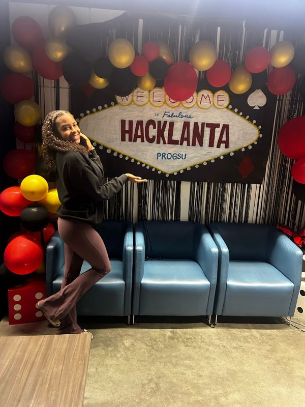
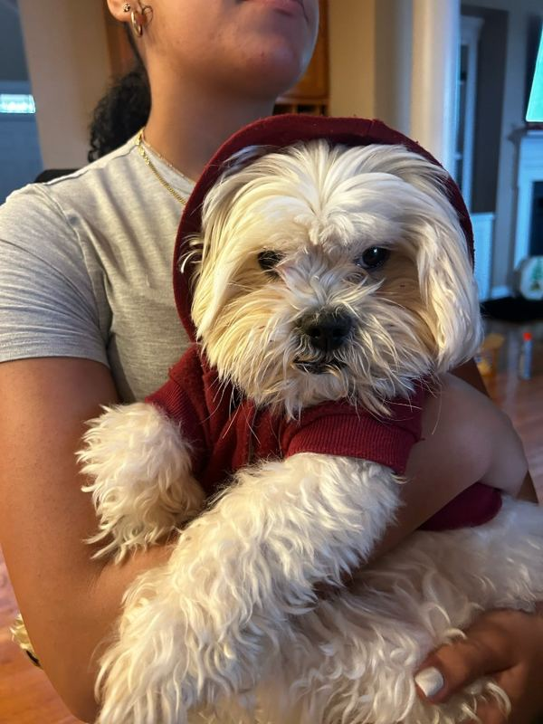

Education
- Georgia State UniversityB.S. Computer Science, expected Dec 2027
- Virginia TechFreshman year, then transferred to GSU
- CourseworkBig Data Programming, Data Structures, Software Development, System-Level Programming
GenAI · Data · Security


Hacklantamove your mouse to look around the city
I build GenAI retrieval systems, distributed data pipelines and secure full-stack apps. Computer Science at Georgia State University, Gen AI Engineer Intern at Arango, and IT Technician in the U.S. Air Force Reserve.
CS student and builder based in Atlanta, open to internships and entry-level roles in AI, data and security engineering.
Three projects that show how I work: production GenAI, systems from bare metal, and ML with the trade-offs measured.
A multi-service GenAI pipeline that turns documents into a knowledge graph for retrieval. I took a failing deployment and traced problems across service boundaries until it ran end to end.
Two empty virtual machines turned into a working Spark and Ray cluster, then used to measure how much speedup parallelism really delivers.
How much of a pretrained transformer do you need to update for a new task? A head-to-head of full fine-tuning against LoRA adapters.
Filter by area. Each board tilts with your cursor.
No projects in this area yet.
U.S. Air Force Reserve
Arango
Based in Atlanta, GA. Open to remote internships and entry-level roles in GenAI, data and security engineering.